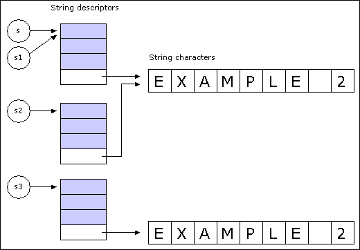

In addition to basic concepts close to the language level, the Kernel covers such common needs as input and output, storage and retrieval of objects on persistent storage, fine control over exception handling and memory management, and access to operating system facilities. The kernel can be divided into 5 logical clusters of classes:
The Eiffel inheritance mechanism is set up in such a way that every class is a descendant of a Kernel Library class called ANY. The features of this class provide a number of generally applicable facilities covering such needs as comparison, copying and rudimentary input and output.
Every class which has no inheritance clause is understood to have an inheritance clause
of the form
inherit
ANY
As a result, every developer-defined class is a descendant of ANY. You may introduce your own project specific features in ANY so that all the classes of your system will be able to use these features.
If you need to rename or redefine a feature inherited from one of the universal classes,
you should include an explicit inheritance clause, as in
class
C
inherit
ANY
rename
out
as basic_out
redefine
print
end
...
feature
...
end
The features of ANY
are usable in both qualified and unqualified form. For example, the argumentless function out, which produces a printable representation of any object,
may be called under either of the forms
x := out
x := a.out
The first call yields a printable representation of the current object; the second,
which assumes that a is not void, yields a printable representation of the object attached
to a.
Some of the features of ANY
cover common input and output needs.
Feature io,
of type STD_FILES,
gives access to standard input and output facilities.
For example,
io.input
is the standard input file and
io.new_line
will print a line feed on the standard output. Feature io is declared as a once function which, when first called,
returns the value of an instance of STD_FILES
that provides access to the standard input, the standard output and the error output. As a result, io is never void, so that
operations such as
io.new_line
are always possible.
Function out, of type STRING,
is a universal mechanism for obtaining a simple
external representation of any object. For non-void x of any type, the string
x.out
is a printable representation of x. This works for x of all types,
reference or expanded. For example, if x is an integer expression,
x.out
is its string representation, such as -897; if n is a non-void reference,
x.out is (recursively)
the concatenation of the result of
applying out to the successive fields of the attached object, each labeled by the name of
the corresponding attribute. You may redefine out
in any class to specify any suitable format for displaying instances of the class. To obtain the default representation
regardless of any redefinition of out, use
tagged_out, declared as a frozen synonym of
the original out.
The call print
(x)
will output the value of
x.out
on the default output if x is not void, and do nothing otherwise.
Procedure copy copies the fields of an object onto those of another. It is used under the
form
target.copy
(source)
Here both target and source must be non-void; this means that copy is only good
for copying onto an object that already exists. If you need both to allocate a new object
and to initialize it as a copy of another, use the function clone. For non-void source, the
assignment
target :=
clone
(source)
starts by creating a new object. If source is void, target will be made void too.
The boolean function
equal
compares two objects for field-by-field equality. This is different from the equality operators
= and /= which, in the case of reference types,
compare references, not objects.
The function
deep_clone
produces a duplicate of an entire object structure. The boolean function
deep_equal
determines whether
two object structures are recursively
identical. These routines are the deep counterparts of the shallow copy and equality
tests provided by
clone
and
equal.
A class that needs a specific notion of equality and the corresponding copy
semantics may redefine copy
and is_equal
(from which
equal
follows, since
equal
(a,
b) is defined as
a.is_equal
(b) for non-void a).
You will find such redefinitions in a number of classes of the Base libraries. For example an instance of
STRING is a string
descriptor containing a reference to the actual character sequence, not that sequence
itself, so that what the default equal compares and the default copy copies is the
descriptor, not the string. Class STRING
redefines these routines to yield the semantics
normally expected by string clients; the frozen variants standard_copy
and standard_equal, originally declared as synonyms to equal and copy, remain available with the
default semantics.
The function clone
is defined in terms of copy, and so will follow any redefinition
of copy. This makes it impossible to change the semantics of one but not of the other,
which would be a mistake. The variant standard_clone
is defined in terms of standard_copy.
The string-valued query generator, applied to any object, returns the name of the
object’s generating class: the class of which it is an instance. The boolean function
conforms_to
makes it possible to test dynamically whether the
type of an object conforms to that of another - that is to say whether the first one’s
generator is a descendant of the second one’s.
These two features enable clients to ascertain the dynamic type of an entity at runtime. They are only useful for low-level components; the normal mechanism for type-dependent operations is dynamic binding.
The query Void, of type
NONE, denotes a reference that is always void - not attached to
any object.
Procedure do_nothing
does what its name implies.
Function default
also has an
empty body; its result type is like Current, so what it returns is the default value of the
current type. This is mostly interesting for expanded types, since for reference types the
default value is simply a void reference.
A number of classes offer facilities which are very close to the language level. Here too the book Eiffel: The Language covers the classes in detail, so we can satisfy ourselves with a quick summary; the flat-short forms appear in part C.
The basic types BOOLEAN,
CHARACTER,
INTEGER, REAL
and DOUBLE are defined
by classes of the Kernel library.
In reading the class specifications for the numeric types INTEGER,
REAL and DOUBLE, you might think that the type declarations are too restrictive. For example the
addition operation in class REAL
reads
infix "+" (other:
REAL):
REAL
but there is actually no problem here. A language convention applicable to all arithmetic expressions, the Balancing rule, states that in any such expression all operands are considered to be converted to the heaviest type, where DOUBLE is heavier than REAL and REAL is heavier than INTEGER. So mixed-type arithmetic, consistent with common practice, is possible and indeed frequent.
To create and manipulate one-dimensional arrays, use class ARRAY
of the Kernel Library. Arrays are not primitive language elements; instead, they are handled through class
ARRAY. This class is “normal” in the sense that it may be used just as any other class
by client and descendant classes. It is also somewhat special, however, in that the Eiffel
compiler knows about it and uses this knowledge to generate efficient code for array
operations.
To create an instance of ARRAY, use the creation instruction
create
my_array.make
(1, u)
where the arguments indicate the lower and upper bounds. These bounds will then be
accessible as my_array.lower
and my_array.upper. The number of items is
my_array.count;
feature capacity
is a synonym for count. The class invariant expresses
the relation between count,
lower
and upper.
To access and change the item at index i in array a, you may use features
item
and put, as in
x := my_array.item
(i)
my_array.put
(new_value, i)
Function
item
has an infix synonym, infix
"@",
so that you may also write the first assignment above more concisely as
x := my_array @
i
Features
item,
infix
"@"
and put
have preconditions requiring the index
(iin the above calls) to be within the bounds of the array. This means that you can detect
bounds violations (which correspond to bugs in the client software) by using a version
of class ARRAY compiled with precondition checking on. The bounds of an array may be changed dynamically through procedure resize.
Previously entered elements are retained. Rather than an explicit resize, you may use calls to procedure force which has the
same signature as put but no precondition; if the index is not within the current bounds
force will perform a resize as necessary.
CAUTION: Although ARRAY benefits from an efficient implementation, its more advanced facilities such as resizing do not come for free. For extensive computations on large arrays, an optimization may be desirable, bypassing these facilities. The technique yields loops that run at about the same speed as the corresponding loops written in C or Fortran (the usual references for array computations). It is of interest for advanced uses only, so that you may safely skip this section on first reading unless your domain of application is numerical computation or some other area requiring high-performance array manipulations.
The optimization relies on the class SPECIAL, used internally by
ARRAY but of no
direct interest to client developers in most common uses. With the declarations
my_array: ARRAY
[SOME_TYPE]
direct_access:
SPECIAL
[SOME_TYPE]
you may use direct_access in lieu of my_array within a critical loop, provided none of
the operations may resize the array. Typically, the operations should only include
put
and item. In such a case you can use the following scheme:
direct_access:=
my_array.area
This replaces an original loop where the operations were on my_array. Feature area
of ARRAY gives direct access to the special object, an instance of
SPECIAL, containing
the array values. Features
put
and
item
are available in SPECIAL
as in ARRAY,
but without the preconditions; in other words, you will not get any bounds checking.
Instances of SPECIAL
are always indexed from zero, in contrast with arrays, whose lower bound is arbitrary, 1 being the most common value. But rather than performing
index translations (that is to say, subtracting
my_array.lower
from
index
throughout the loop) it is preferable to use the following simple technique: if the lower bound lb of
my_array is 1 or another small integer, use 0 as lower bound instead when creating
my_array, but only use the positions starting at lb. You will waste a few memory positions
(0 to lb-1), but will not have to change anything in your algorithm and will avoid costly
subtractions.
-- The critical loop:
from
some_initialization
index := some_initial_index
until
index = some_final_index
loop
...
x :=
direct_access.item
(index)
...
direct_access.put
(some_value,
index)
...
end
It is important to note that this optimization, if at all necessary, should at most affect
a few loops in a large system. You should always begin by writing your software using
the normal ARRAY
facilities; then once you have the certainty that the software is
correct, if you detect that a large array computation is hampering the efficiency of the
system, you may apply the above technique to get the fastest performance out of that
computation. The change to the software will be minimal - a few lines - and will be
easy to undo if necessary.
Strings are handled by class STRING, similar in many respects to
ARRAY. Strings are of arbitrary size. The make creation procedure takes an integer
argument, as in
s,
s1,
s2,
s3:
STRING
...
create
s.make
(30)
The argument indicates the number of characters for the initial allocation. This is
not an absolute limit: the string will automatically grow or shrink as a result of future
operations. You may always request a resizing explicitly by calling procedure resize.
The object attached at run-time to an entity such declared of type STRING
is not the actual sequence of characters but a string descriptor, which contains a
reference to the actual string contents.
As a result, four assignment or assignment-like operations are possible:
As illustrated below, A1 is a reference assignment: s1 will be attached to the same descriptor as s. A2 keeps the descriptors distinct, but make them refer to the same sequence of characters. A3 uses the redefinition of clone for class STRING: s3 will be attached to a new string, completely distinct from the string attached to s1 although made of identical characters. A4 has almost the same effect as A3, but is only applicable if s4 was not void, and will override the existing descriptor rather than creating a new one.

fig. 1: Effect of string assignment and copy operations
BASIC_ROUTINES provides a number of conversion functions, such as charconv.
A few classes of the Kernel Library support file manipulation, input and output: STD_FILES, FILE, DIRECTORY and UNIX_FILE_INFO. For simple applications it suffices to use STD_FILES, but to understand the concepts better it is preferable to look first at the other two.
FILE describes the notion of sequential file viewed as a data structure which fits in the
general taxonomy of EiffelBase.
The class declaration defines files as unbounded sequences of characters. This
means that you will find in FILE
all the operations on sequential data structures that you have come to know and love by reading this documentation - at least, all
that apply. Just as stacks and linked lists, files have put, extend, has, item and so on.
More specific to files are the typed input and output operations. For output, you will
find put_character,
put_integer,
put_real,
put_double
and put_string, as well as
new_line. For input you
will find read_integer
and its co-conspirators.
CAUTION:
Note the application to input features of the command-query separation principle.
The input features such as read_integer
do not by themselves return a result; they set the
values of queries such as last_integer. So the normal way to read is through two operations:
my_ file.
read_integer
new_value :=
my_ file.last_integer
Queries are available to determine the status of a file, in particular exists, is_readable, is_executable, is_writable, is_creatable, is_closed, is_open_read and so on.
CAUTION:
You will notice in the flat-short form that all these queries except the first have
exists
as a precondition. This precondition is good for efficiency since it saves an
existence test - a relatively expensive operation - when you know that a certain file
exists. But it also means that if you have any doubt about the file’s existence you must
use the queries in the style
if
my_ file.exists
and then
my_ file.is_readable
then...
FILE is a deferred class. Various implementations are possible. A quite detailed one is
PLAIN_TEXT_FILE, which adds many features for accessing
reading and writing data from/to a file.
UNIX_FILE_INFO
describes objects that contain internal information, such as protection mode and size, about a file.
The class DIRECTORY
describes those files which are directories - nodes in the tree describing the file structure.
Regardless of the operating system that you use, for simple input and output
STD_FILES
is sufficient. You may inherit from that class to gain direct access to its features;
or you may declare an entity of type STD_FILES. But remember that a feature of this
type is always available: io, from class
ANY. Thanks to this feature you may include
simple input and output in any class, with instructions such as
io.put_string
("My message")
STD_FILES
defines three default files through features input,
outputand
error.
These features are Once functions, so that the first reference to any one of them will
automatically create the corresponding file descriptor and open the associated file.
To simplify the writing of common input and output operations, the most frequently
used features of class FILE
- for reading and writing integers, reals and so on, as discussed next - have been repeated in
STD_FILES
so as to apply to the default input and output. Procedure put_string
in the example at the beginning of this section is typical: it writes its output on the standard output. More generally,
STD_FILES
has all the put_xxx, read_xxx and last_xxx features of FILE.
Most object-oriented applications need the ability to store object structures on persistent
storage for later retrieval, and to transfer such object structures to other applications.
Class STORABLE
addresses this need.
A fundamental requirement on object persistence mechanisms is the Persistence
Completeness rule, stated as follows in Eiffel: The Language:
Whenever a routine of class STORABLE
stores an object into an external file, it stores with it the dependents of that object. Whenever
one of the associated retrieval routines retrieves a previously stored object, it also retrieves all its dependents.
Storing an object just by itself would usually result in wrong semantics: most
objects contain references to other objects, which must also be stored and retrieved with
it. The persistence completeness rule ensures that this is always the case. It also means,
of course, that the features of STORABLE
must do much more than simple input and output; they must perform complete traversals of object structures.
Class STORABLE
is meant to be used as ancestor. You can use its features in any descendant C; for example a routine of C may contain a call of the form
basic_store
(my_descriptor).
The effect of this call will be to store the current object and all its dependents into
the file denoted by my_descriptor.
Although
basic_store
and other procedures of STORABLEwill in general process
objects of many different types, only the generating class of the structure’s initial object,
C in our example, needs to be a descendant of
STORABLE.
Two variants of the store operation are supported: basic store and general store. Basic
store produces more compact structures in the resulting files, and is slightly faster; but
the resulting structure is dependent on the system which executes the store
operation (“System” is taken here, as elsewhere in this
documentation, in its Eiffel sense of an executable assembly of classes, compiled together with the help of an Ace specification.) This
means that you can use procedure basic_store
to store an object structure during an execution of a system if you will only retrieve it later in that execution, or in a
subsequent execution of the same system. If you need to store objects from a certain system and then retrieve them from a
different system, possibly running on a different computer, use general_store.
The result of general_store
is still platform-dependent; the representation of numbers, in particular, is determined by the underlying machine architecture. A third variant called
independent_store
will be added in the future to STORABLE, using an entirely platform-independent
storage format; then a system running on a computer with a certain architecture
will be able to retrieve, without any explicit conversion operation, object structures stored by a
system running on a machine of a completely different architecture. With
general_store
the
storing and retrieving computers must have compatible architectures.
You only need to be aware of the difference between basic and general store at storage
time. The stored structure will always be available through feature retrieved; this feature
will figure out, from the format of the stored structure, whether it was stored by
basic_store
or general_store, and will decode it accordingly.
Feature retrieved returns a result of type STORABLE
and is typically used through an assignment attempt of the form
x ?=
retrieved
(my_descriptor)
The assignment attempt is necessary because retrieved returns a result of type STORABLE whereas the type of x will be based on a proper descendant of STORABLE. If the structure in the file has been corrupted and retrieved is unable to do its job, it will trigger an exception. The code for that exception in class EXCEPTIONS (which inherits it from EXCEP_CONST and is discussed in the next section, together with the notion of exception code) is Retrieve_exception.
In some applications you may need to fine-tune the exception handling and memory management mechanisms. You may also need a simple way to access command-line arguments. In less common cases you may require low-level access to internal properties of objects.
Class EXCEPTIONS
enables you to control the handling of exceptions. UNIX_SIGNALS, discussed next, complements it for the special case of fine-grain signal
handling on Unix or Unix-like platforms. Both are meant to be inherited by any class
that needs their facilities.
The basic exception mechanism treats all exceptions in the same way. In some cases
it may be useful to discriminate in a Rescue clause between the various possible causes.
Class EXCEPTIONS
provides the features to do this. Each kind of exception has an integer code, which you can use through several features:
The class also provides a set of constant integer-valued attributes which denote the
various possible codes, such as No_more_memory, Routine_ failure and Precondition_violation. So you can test the value of exception against these codes if you need to
ascertain the precise nature of an exception. To keep EXCEPTIONS
simple these constant attributes are declared in a class EXCEP_CONST, of which
EXCEPTIONS
is an heir.
Another occasional requirement is for a mechanism to trigger an exception
explicitly. Procedure raise
answers this needs; the argument, a string, is the tag chosen for the exception. The code in this case is Developer_exception; the query
is_developer_exception
will return true; and the tag is accessible through feature tag_name.
You will notice in the interface specification for EXCEPTIONS
that for some properties of the latest exception there are two features, one with a name such as
exception
or recipient_name
as seen above and the other with a name prefixed by original_: original_exception,
original_recipient_name.
CAUTION: The reason for the presence of these pairs is that the immediately visible cause of a routine interruption may not be the real one. Assume that routine r from class C, which has a Rescue clause, calls s from D with no Rescue clause, and that some call executed by s causes a precondition violation. Because s has no Rescue clause of its own, s will fail. Up the call chain, the first routine that has a Rescue clause - r itself, or one of its own direct or indirect callers - may process the exception; but if it examines the exception code through attribute exception it will get the value of Routine_failure. This may be what you want; but to handle the situation in a finer way you will usually need to examine the code for the original exception, the one that interrupted s. This code will be accessible through the attribute original_exception, which in this case will have the value of Precondition, the exception code for precondition violations. So you have the choice between exploring the properties of the original exception, or those of the resulting routine failures. Just make sure you know what you are looking for.
As you will see from the header comments in the flat-short form of class EXCEPTIONS, the queries that return detailed information about an exception, such as assertion_violation, all give an answer determined by original_exception rather than exception, since when the two are different (that is to say, when you handle the exception in a routine other than the original recipient) the value of exception is always Routine_failure and there is nothing more to say about it.
The features of class EXCEPTIONS
enable you to determine whether a certain
exception is a signal - an operating system event such as may result from a child
process that disappears, a window that is resized, a user that hits the Break key and
many others. But they do not give you more details because the exact set of possible
signals is highly platform-dependent.
Class UNIX_SIGNALS
complements EXCEP_CONST
by providing codes for the signals of Unix and similar systems, such as Sigkill for the “kill” signal and Sigbus for
bus error.
Query is_defined
(some_signal), where
some_signal is an integer code, will
determine whether some_signal is supported on the platform.
A class whose routines need to perform specific processing depending on the nature
of signals received should inherit from UNIX_SIGNALS, or a similar class for another
platform.
Because signal codes are platform-dependent, the features of UNIX_SIGNALS
are
implemented as once functions - computed on the first call - rather than constants,
although this makes no difference to clients.
Class MEMORY, like EXCEPTIONS, is meant to be used as an ancestor by classes that
need its facilities. It offers a number of features for controlling memory management
and fine-tuning the garbage collection mechanism, a key component of the ISE Eiffel
environment.
One of the most useful features in this class is dispose. This procedure describes
actions to be applied to an unreachable object just before the garbage collector reclaims
it. By default, as declared in MEMORY, the procedure does nothing; but you may
redefine it in a proper descendant of MEMORY
to describe dispose actions. Normally such actions will involve freeing external resources: for example a class describing file
descriptors may redefine dispose so that whenever a descriptor object is garbage-collected
the corresponding file will be closed.
CAUTION: This example is typical of proper uses of dispose.In a dispose procedure you should not include any instruction that could modify the Eiffel object structure, especially if some objects in that structure may themselves have become unreachable: these instructions could conflict with the garbage collector’s operations and cause catastrophic behavior. The legitimate use of dispose redefinitions is for disposing of non-Eiffel resources.
Other features of MEMORY
provide direct control over the operation of the garbage collector. You can in particular stop garbage collection through a call to
collection_off,
and restart it through a call to
collection_on.
By default, garbage collection is always on (a testimony to its authors’ trust in its efficiency).
Garbage collection is normally incremental, so as not to disrupt the application in a
perceptible way. To start a complete garbage collection mechanism - reclaiming all
unused objects - call procedure full_collect. The remaining features of MEMORY
enable finer control of the collection
mechanism and are useful in special cases only. You will even find a free procedure
providing brave (and competent) developers with a mechanism for reclaiming
individual objects manually.
MEM_INFO, the result type for query
memory_statistics
in
MEMORY, describes objects
containing information collected about memory usage. The features of GC_INFO
provide statistics about the garbage collector’s operation.
Writing, assembling and compiling a system yields an executable command. The
system’s users will call that command with arguments. These are normally provided in
textual form on the command line, as in
your_system arg1 arg2 arg3
although one may conceive of other ways of entering the command arguments, such as
tabular or graphical form-filling. In any case the software must be able to access the
values passed as command arguments.
A language mechanism is available for that purpose: the Root Class rule indicates
that the creation procedure of the root class may have a single argument (in the Eiffel
sense of argument to a routine) of type ARRAY
[STRING]. The corresponding array of
strings will be initialized at the beginning of the system’s execution with the values
entered as arguments to that execution of the command.
Although this facility suffices in many cases, it is not always convenient if you
suddenly need to access the command arguments in a class that is far-away from the
root. An alternative mechanism, class ARGUMENTS, is available. Once again, this is a
class from which you should inherit if you need its facilities. It has just two exported
features: